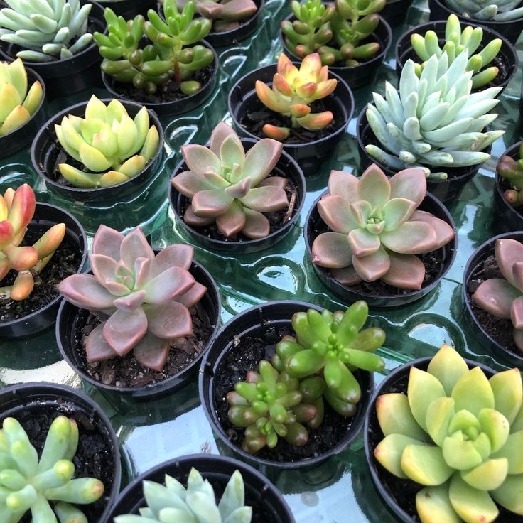

Suculentas
A planta suculenta é caracterizada por suas folhas, caules ou raízes grossas e carnudas, que armazenam água para sobreviver em ambientes secos. Suas formas variam, podendo ser pequenas e compactas ou se estenderem mais amplamente. As folhas geralmente têm uma aparência cerosa ou espessa e podem ser verdes, azuladas, avermelhadas ou até variegadas. As suculentas são populares por serem de fácil cuidado, exigindo pouca água e manutenção. São ideais para decoração de interiores e jardins, e podem florescer com pequenas e delicadas flores em algumas épocas do ano.